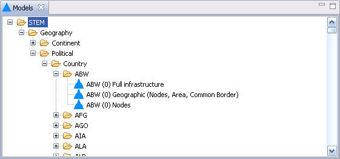

The Models view displays the Models that are available for use in user defined Scenarios. The available Models are organized in a tree. Those listed under "STEM" are built-in to STEM. There may be others provided by third-parties. These predefined models provide an invaluable "jump-start" in the process of defining other Models.
The view supports "drag" such that a Model can be dragged from this view and "dropped" into an open Model or Scenario editor.
